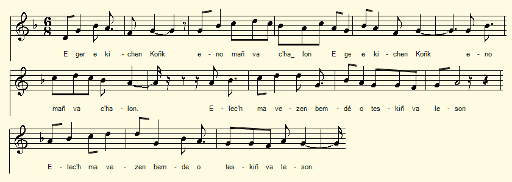

Le pêcheur
1° Ar Pesketaer
The fisherman
Chant tiré du 2ème Carnet de collecte de La Villemarqué (pp. 58 -59/30).
Mélodie
"Bleunioù o tremen"
Arrangement Christian Souchon (c) 2017
|
A propos de la mélodie On peut supposer que le chanteur est le même que celui du chant qui précède celui-ci (Yannik Leuhan) dans le carnet, la mystérieuse Mariana. Le lieu de collecte est certainement Coray ou Leuhan, pour reprendre des toponymes cités dans les pages précédentes du carnet. Il ne peut en tout cas s'agir que de la Haute Cornouaille. Or, il existe un chant, "Al labousig er c'hoad" dont les 4 premières strophes correspondent à peu près aux strophes 9-10 et 13-14 du "Pêcheur". Il semble donc naturel d'assigner à ce dernier la même mélodie. Elle est donnée avec le chant portant ce titre sur le site de Pierre Quentel comme provenant de "Sonioù-pobl", un recueil de Fañch Danno édité par Skol Vreiz en 1968. (http://per.kentel.pagesperso-orange.fr/sons/bleuniou_o_tremen.mid). On a ici utilisé une modification de cet air par Eostig Kerineg pour accompagner son poème "Bleunioù o tremen" publié dans "Sonioù Feiz ha Breiz", un recueil édité vers 1930. (http://per.kentel.pagesperso-orange.fr/bleuniou_o_tremen1.html). A propos du texte Le présent chant a été noté, sous cette forme, uniquement par La Villemarqué, dans son carnet de collecte N°2, pp. 59 & 60, à ceci près qu'à part la métaphore halieutique (str. 1, 1.2, 1.2, 2.2 et 2.3), l'intrigue de cette chanson de clerc qui quitte sa bonne amie pour aller étudier dans quelque ville lointaine est un poncif que l'on rencontre souvent. C'est en particulier la même que dans le texte beaucoup plus complet (11 strophes de 4 vers), recueilli par F.-M. Luzel et publié dans ses "Sonioù", tome I, page 152, sous le titre "An Envnic rouz" (La fauvette). Le carnet N°2 ayant été commencé en 1841, ce chant ne peut, comme ceux du carnet précédent, avoir servi à composer la Kroaz an hent (La croix du chemin) du Barzhaz de 1839. "Evnig a gan er c'hoad uhel/ Ha melenik e zivaskel.. Abredik mat eo diskennet/ War lezenn treuzoù an oaled". "Kemerit un dous, va mignon/ A lakay laouenn ho kalon" du Barzhaz répond au "Kemer ur plac'h yaouank/ Kalon ur plac'h yaouank zo joaius ha ge" de la strophe 13 du "Pêcheur". Des images surprenantes Ceci dit, les surprenantes images sont propres à ce chant qui était peut-être autonome et qui se trouve ici contaminé par d'autres sonioù. Le Conquet ou Concarneau Le texte de "Er ger e-kichen Koñk" ne provient qu'en partie du recueil de Fañch Danno.Il manque en particulier la première strophe. Celle notée ici provient du site du choeur d'hommes du Pays Pagan "Strollad Paotred Pagan". (http://paotredpagan.bzh/paotredpagan/er-ger-e-kichen-konk). Ce toponyme désigne une bande côtière aux limites variables selon les auteurs, mais toujours située au nord de Brest. Les habitants ont la fâcheuse réputation d'avoir été autrefois des naufrageurs. Dans la traduction française que propose "Strollad", "Koñk" est traduit par "Le Conquet", à l'extrémité de la Pointe Saint-Mathieu, à l'entrée de la rade de Brest. Il s'agit de "Koñk Leon", Le Conquet de Léon. Un autre site, qui décrit un circuit en Cornouaille (capitale Quimper), évoque ce chant sans le traduire. Sans doute pense-t-il à "Koñk Kernev", Concarneau, le Conquet de Cornouaille. Le nom du village à côté de Koñk, cité par la Villemarqué à la première ligne de son chant, "An Orglijaou" ou "An Oialou", est malheureusement illisible est ne permet pas de trancher entre les deux hypothèses. |
About the tune We may assume that the singer of this song is the same as for the foregoing in the notebook (Yannik Leuhan), i.e. the mysterious Mariana.. The place of collection is certainly Coray or Leuhan, that are toponyms mentioned in the previous pages of the notebook. In any case, the collection area can only be Upper Cornouaille. However, there is a song, "Al labousig er c'hoad" whose first 4 stanzas correspond roughly to stanzas 9-10 and 13-14 of the "Fisherman". It seems natural to assign the same melody to the latter. This tune accompanies the homonymous song at the site of Pierre Quentel, borrowed from "Sonioù-pobl", a collection by Fañch Danno edited by Skol Vreiz in 1968. (http: //per.kentel.pagesperso-orange. en / sounds / bleuniou_o_tremen.mid). We have used a modification of this air composed by Eostig Kerineg to accompany his poem "Bleunioù o tremen" from "Sonioù Feiz ha Breiz", a collection published around 1930. (http://per.kentel.pagesperso-orange.fr/ bleuniou_o_tremen1.html). About the lyrics The song at hand was noted, in this form, only by La Villemarqué, in notebook No. 2, pp. 59 & 60. Or, more precisely, apart from the halieutic metaphor (stanzas 1, 1.2, 2.2 et 2.3) featuring only in La Villemarqué's collecting book, the plot of this song about a "clerk" who leaves his sweetheart to study in a distant city is a cliché that is often resorted to. In particular it is the same as in the much more complete text (11 stanzas of 4 verses), collected by F.-M. Luzel and published in his "Sonioù", volume I, page 152, under the title "An Envnic rouz" (The Red Warbler). The Notebook N ° 2 having been started in 1841, this song can not, like those in Notebook N° 1, have been used to compose the "Kroaz an hent" (The Cross on the wayside) song in the 1839 Barzhaz edition. "Evnig a gan er c'hoad uhel / Ha melenik e zivaskel.. Abredik mat eo diskennet / War lezenn treuzoù an oaled". "Kemerit un dous, va mignon, / A lakay laouenn ho kalon" in the Barzhaz echoes the lines "Kemer ur plac'h yaouank / Kalon ur plac'h yaouank zo joaius ha ge" of stanza 13 in the song at hand. . Stunning pictures That said, the surprising images are peculiar to this version which was perhaps an autonomous song in its own right that was contaminated by other "sonioù" with similar plots. Le Conquet or Concarneau The below text of "Er ger e-kichen Koñk" is taken only partly from Fañch Danno's collection. Danno's version lacks in particular the first stanza. The one noted here comes from the site of the Pagan Country Men's Choir, "Strollad Paotred Pagan". (http://paotredpagan.bzh/paotredpagan/er-ger-e-kichen-konk). This place name is that of a coastal area, north of Brest, whose boundaries vary depending on the authors. Its inhabitants have the bad reputation of being the descendants of wreckers who lured sailors to their death. In their French translation the "Strollad"-men, render "Koñk" as "Le Conquet", a town at the end of Saint-Mathieu Point, at the entrance of Brest Harbour. This is in Breton "Koñk Leon", Konk in Léon. Another site, which describes a circuit throughout Cornouaille (i.e. the area around Quimper), quotes this song without translating it. There is little doubt that they mean "Koñk Kernev", Concarneau, Konk in Cornouaille. The name of the hamlet next to Koñk mentioned by La Villemarqué, on the first line of his song, "An Orglijaou" or "An Oialou", is unfortunately illegible and does not allow to decide between the two possibilities. |
|
BREZHONEG (Stumm KLT) P. 58 [Ar Pesketaer] 1. Er gerig kichen Koñk hañvet an Orglijoù [?] Ez ean-me noz-ha-deiz, e tispleg va rouedoù. (x) 2. E tarempred ur plach p'hini garan parfet (meurbet) An holl a lavar din ez eus amzer gollet. 3. Mont a ran ur wech choazh betek ti va mestrez A pa gollfen va foan, graet am-eus alies: 4. Hervez ma laro din, me yelo d'ar studi E-lech biken james er vro ne vin gwel't-mui. (En bas de page): (x) 1.2. Ez ean me noz-ha-deiz da stlejal ma rouedoù 2.2 Da bakañ ur peskik skanteg en arc'hant gwenn. An holl a lavar din n'hellan ket hi pakein. (Verticalement, dans la marge gauche) 2.3 O pakañ ur peskig zo skanteg en arc'hant Ha leizh a lavar din hag eo gounin em c'hoant. p. 59 / 30 4. - Mard' it-c'hwi d'ar studi evel ma leveret, Lakait-c'hwi pevar plañch dober din un arched! 5. Nag an deiz nag an noz, e-lec'h na weler mui. Am-befe 'r galon houarn ne c'hellfe ket pell mui (+) 6. Hag an holl morioù don karget a glavig fin Hag an holl henchoù-meur paveet a basein. 7. Pluñv an holl loened-nij pa vint holl daspunet Ne vint ket vit skrivañ ar garantez parfet 8. Ne vint ket vit skrivañ ar garantez parfet Pehini a zo amañ etre daou zen yaouank 9. Me 'm-eus ul lapous rous, melen e zivaskell, Hag a zisken bemde war bordik va mantell. 10. Hag a zisken bemde war bordik va mantell. Hag a lavar din-me ha ro din da grediñ: 11. - 'N hini e karantez ne gousk na noz na deiz Lech a vez karantez, birviken fin na vez. 12. - Gaou 'larez lapous, n'hellan ket aprouet: 'N hini 'choaz karantez a vez joaius bepret. - 13. Hennezh a lar din-me: "Kemer ur plach yaouank! Kalon ur plach yaouank a zo joaius ha ge. 14. Kalon un intanvez nemet tourmant (glac'har) na vez." Med setu va mestrez a zo klevet bremañ! 15. Vit ar wech diwezhañ.me laro kenavo, Me laro kenavo, araok kuitaat va bro! - (en bas de page) (+) 9.2. M'em-eus ul lapouzik e korn jardin va zad Hag un eostik penn-bailh o kanañ bep pennad. 10.2 Kanañ ra eñ ken ge, kanañ ra manifik, Ken a laka laouenn kalon va mestrezik. (Verticalement, dans la marge gauche) 14.2 M'am-eus choazet unan ken kaer evel d'al loar, Lugernuz 'vel d'an heol, pa bar war an douar. p. 60 7.2. Pluñv ar gwai hag al lapoused holl dastumet N'ont ket evit skrivañ 'r garantez 'vel honnezh. Transcrit KLT par Christian Souchon |
FRANCAIS P. 58 Le Pêcheur 1. A côté du Conquet, au lieu-dit "Orglijou", Je m'en vais nuit et jour pour tendre mes filets. (x) 2. Car à ma bienaimée je porte un amour fou. Tout le monde me dit que c'est du temps gâché. 3. A nouveau je me rends au logis de ma belle. C'est souvent que je me suis mis en frais pour elle. 4. Selon ce qu'elle me dira, j'étudierai Loin du pays que je ne reverrai jamais. (En bas de page) (x) 1.2. - Et je vais nuit et jour déployer mes filets 2.2 Pour pêcher un poisson aux écailles d'argent Mais que jamais je ne prendrai, disent les gens. (Verticalement, dans la marge gauche) 2.3. Attraper un poisson aux écailles d'argent. Mais beaucoup me demandent si j'y tiens vraiment. p. 59 / 30 4. - Si dans l'étude vous mettez tout votre orgueil, Quatre planches prenez pour me faire un cercueil. 5. Je ne veux plus savoir s'il fait jour ou bien nuit. Mon coeur d'airain jamais n'en aura plus souci (+) 6. Par tous les océans profonds chargés de brume, Tous les chemins pavés m'en irai tour à tour. 7. Que de tous les oiseaux on rassemble les plumes Il en faudra bien plus pour conter cet amour. 8. [Raconter cet amour! Quel immense labeur!] L'amour que se portaient ici deux jeunes coeurs. 9. Voyez cet oiseau roux, voyez ses jaunes ailes Perché sur le chambranle il me tient des discours 10. Des discours il en tient, tout une ribambelle: Il veut me persuader et me dit sans détour: 11. - Jamais on ne guérit, dit-il, du mal d'amour Qui fait que l'on ne dort ni la nuit, ni le jour. 12. - Ce n'est là que mensonge, oiseau, que je conteste: Qui fait le choix d'aimer, toujours sera joyeux... - 13. Il me répond alors: "Prends-donc une jeunesse Le coeur d'une fillette en tout temps est heureux, 14. Quand celui d'une veuve est sujet aux alarmes... - Mais qu'entends-je? N'est-ce pas mon amie qui vient? 15. Voici venu le temps des adieux et des larmes. Voici venu le temps de se mettre en chemin." (en bas de page) (+) 9.2. Il est un rossignol au jardin de mon père: Son front est tâcheté. Son chant est incessant 10.2 Il chante avec entrain. Son chant n'est pas austère. Le coeur de mon aimée tressaille en l'entendant (Verticalement dans la marge gauche) 14.2 Celle que j'aime est bien plus belle que la lune Et comme le soleil au matin resplendit... p. 60 7.2. Qu'on rassemble toutes les plumes d'oie du monde! Elles échoueront à décrire un tel amour. Traduction Christian Souchon (c) 2019 |
ENGLISH Page 58 The Fisherman 1. Close to Le Conquet town at a place called "Orgliou" I was seen night and day spreading out my nets. (x) 2. Which means I wore to my sweetheart a crazy love. Everybody told me that it was wasted time. 3. Once again I'm going to the house of my lass I am going there as I often did before. 4. Depending on what she tells me, I will stay here Or study far away, never see her again. (At the bottom of the page) (x) 1.2. - I will go night and day and deploy there my nets 2.2 To catch a fish adorned with shining silver scales But a fish that I will never catch, so they say. (Vertically, in the left margin) 2.3. I want to catch a fish adorned with silver scales. Many a friend asks me if I really want it. p. 59/30 4. - If it's in the study that you put all your pride, Please go and fetch four boards and make me a coffin! 5. I do not want to know if it is light or dark. What matter to the brazen heart beating no more? (+) 6. I'll sail on all the deep oceans laden with mist, All along the paved highways I shall travel. 7. Of all birds in heaven you may gather the quills It takes much more to tell out the tale of our love. 8. It takes much more to tell out the tale of our love, The tale of the love that our two young hearts have felt. 9. Do you see this red bird, this bird with its brown wings Perched on the hearth sill delivering speeches 10. Perched on the hearth sill it delivers speeches Speeches it holds, speeches, quite a lot, a whole swarm: 11. - One never heals, it says, of the disease of love: Neither at night nor during the day does one sleep. - 12. - This is a blatant lie, O bird, and I gainsay: Who makes the choice to love is happy forever... - 13. It gives me this answer: "But you should take a youth The heart of a young lass is joyful at all times, 14. Whereas a widow's heart is subject to alarms ... " Listen! What do I hear? Is not my lass coming? 15. Alas, the time has come for farewell and for tears. Now for a long journey it is time to set out. (at the bottom of the page) (+) 9.2. There is a nightingale in my father's garden: Its forehead is stained. Its song is incessant 10.2 Enthusiastic it sings. It is not a sad song. The heart of my beloved will thrill on hearing it (Vertically in the left margin) 14.2 The lass I love is as beautiful as the moon And as the morning sun when it shines on the earth ... p. 60 14.2. We shall gather all the goose feathers of the world! But all these quills will fail to describe such great love. |
2° Er ger e-kichen Koñk
Chez moi, près du Conquet
Where I live, near Conquet
Chant tiré du site http://paotredpagan.bzh/paotredpagan/.
|
BREZHONEG 1. Er ger e-kichen Koñk eno 'mañ va c'halon (bis) El lec'h ma ve'en bemdez o teskiñ va leson. (bis) 2. Ul labous 'zo er c'hoad melen e zivaskell Hag a ziskenn bemdez war gornig va mantell. 3. Hennezh 'lavar din-me dimeziñ d'ar bloaz-mañ, N'eo ket d'un intañvez, kentoc'h d'ur plac'h yaouank. 4. Kalon ar plac'h yaouank a zo koant ha charmant Kalon un intañvez 'vez noz-deiz e tourmant 5. Mont a ran ur wech c'hoazh betek ti va mestrez Na ouifen koll va foan, graet am eus alies (E lec'h m'am eus laosket va nerzh ha va buhez). 6. Deuit ganin plac'hig koant ebourzh va batimant Ha ni vo pinvidig gant aour ha gant arc'hant. (Ar peurrest zo, a-dra-zur, amprentet deus ur son-all) 7. Va zad ivez va mamm ne vezint ket kontant Ma yefen-me ganeoch ebourzh ho patimant 8. Ho tad ivez ho mamm e chomo barzh ar gêr Ha ni a yelo hon-daou war bro an Añgleter (ar Gernev Veur) 9. - Gwelloc'h vefe ganin 'n em daol e-barzh ar mor 'Vit mont d'an Añgleter ha kollet va enor. |
FRANCAIS 1. Chez moi près du Conquet, mon cur. à son attache. C'est là que chaque jour on me fait la leçon 2. Car il vient se poser sur le rebord de l'âtre Un bel oiseau doré, droit sorti du buisson. 3. Or cet oiseau me dit qu'avec une jeunesse, Pas une veuve, il me faut convoler, cet an. 4. Un cur de jeune fille est source de liesse. Nuit et jour cur de veuve est en proie au tourment. 5. Aussi m'en retourné-je au logis de ma belle. Si c'est peine perdue, j'en ai perdu souvent. (C'est là que jai laissé ma vie et mon allant.) 6. - La belle, montez donc à bord de ma nacelle Et bientôt nous serons riches dor et dargent. (La suite provient à l'évidence d'un autre chant) 7. - Mon père sera fort fâché, comme ma mére, Si je monte avec vous à bord du bâtiment. 8. Vous et moi nous allons partir pour l'Angleterre (Cornouailles) Tandis que resteront ici vos deux parents. 9. - Me jeter dans la mer: c'est ce que je préfère A perdre mon honneur là-bas en vous suivant. Traduction Christian Souchon (c) 2019 |
ENGLISH 1. At my house near Le Conquet, there lies my heart. This is where every day I'm taught 2. A yellow-winged bird, comes from the nearby wood, Every day, and it sits on the edge of the hearth. 3. This bird tells me to get married this year But not with a widow, with a young girl. 4. Because a girl's heart is happy and charming. And night and day a widow's heart is tormented. 5. So I 'm going back to my pretty lassie's home If I 'm wasting my time, I often did before. (There I have left behind all my strength and my life.) 6. Fair girl, get with me on board my boat And soon we will be rich in gold and silver. ( The rest is evidently borrowed from another song) 7. - My father will be very angry, like my mother, If I get with you on board this ship. 8. While your two parents will stay at home here. You and I are going to England (to Cornwall) 9. - I would prefer to throw myself into the sea: Rather than follow you to England and lose my honour. |